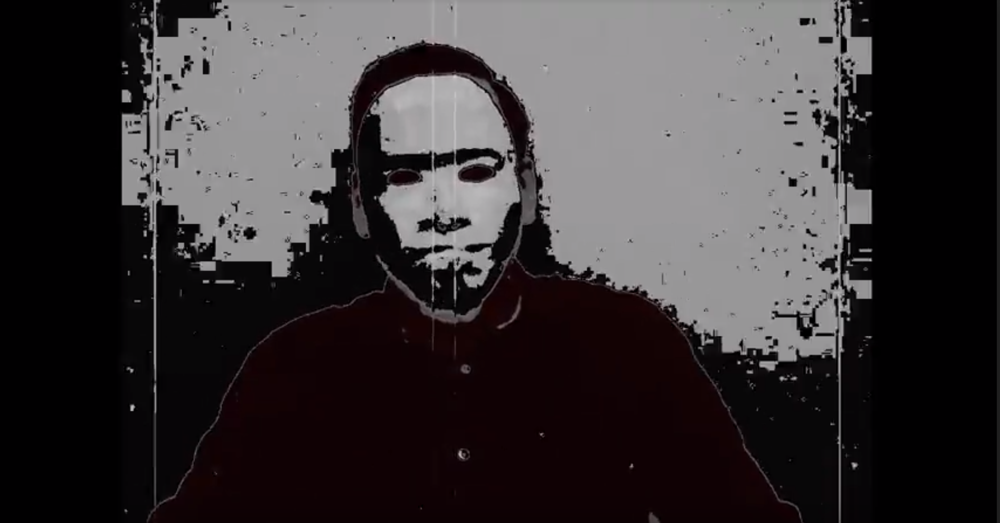
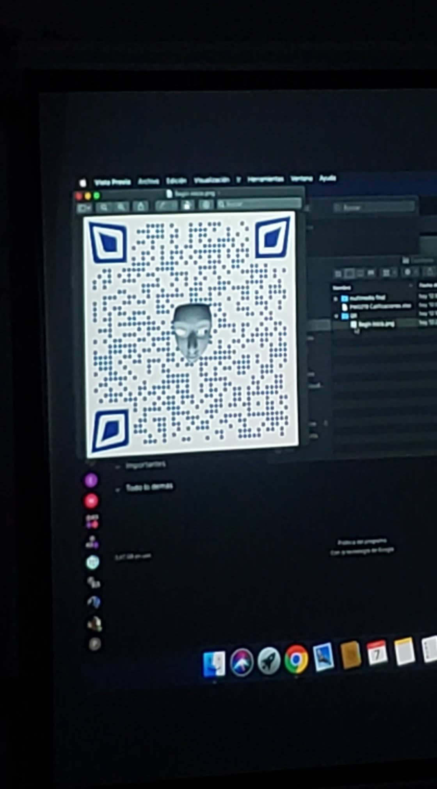
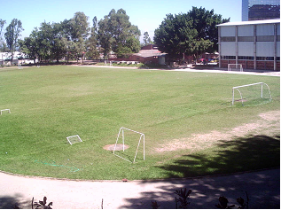
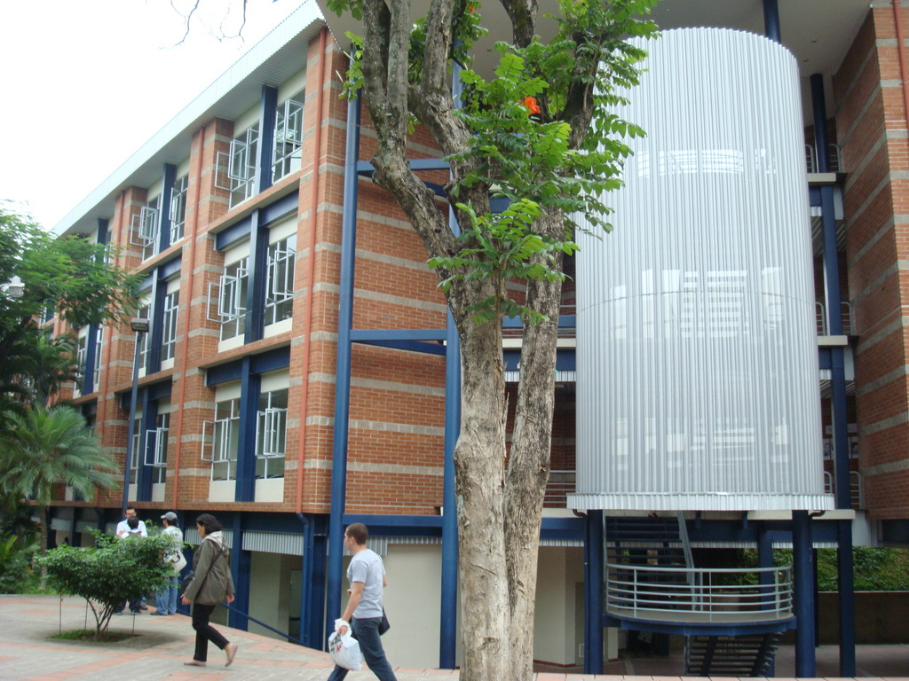
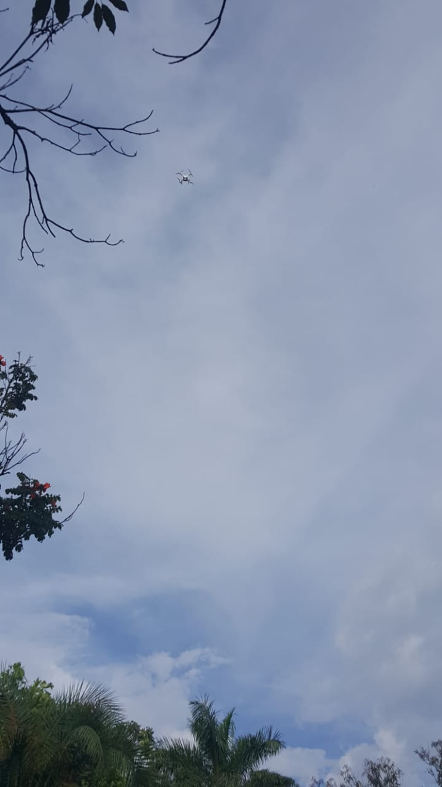
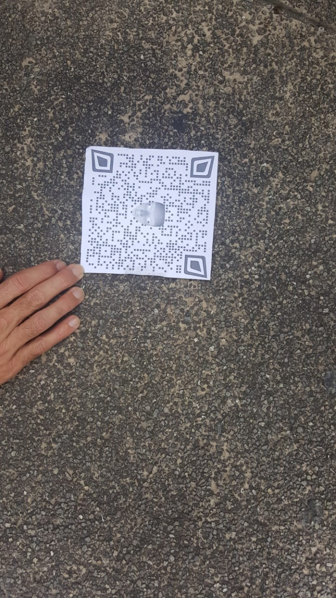
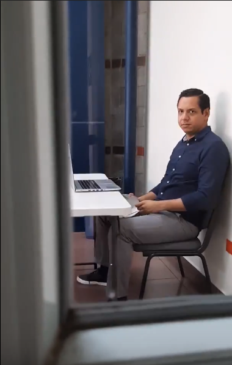

Una vision perversa
Ale Rav se presenta ante nosotros revelando sus planes de destruir la UCA.
Junto a Kurt debemos encontrar la forma de deternlo, por eso nos comunicaremos con el mediante mensajes cifrados.
En este blog si comenta la experiencia vivida a lo largo de la semana y todo lo ocurrido.

Ale Rav
Lunes
El día lunes a mitad de clase se nos presento de repente un video urgente en el cual se mostraba a un sujeto con una mascara que se hacia llamar Ale Rav, en el video el sujeto hablaba sobre los arcaicos métodos de enseñanza de la
universidad y como planeaba demolerla el día viernes,
menciono un artículo que decía que en caso de la destrucción de un centro estudiantil, los estudiantes recibirían de manera automática su título, todos nos quedamos perplejos y asustados por la situación, ver ese video de la nada fue
un poco shockeante y aunque parecía algo bueno en mi primera instancia
pero luego de reflexionar un poco creo que con todos los demás compañeros concluimos que no debíamos permitir que la UCA fuera destruida y debíamos encontrar la manera de detener a Ale Rav.
Justo después ver el video el profesor nos puso el audio de “Kurt” el cual pareciera que conocía los planes de Ale Rav y nos pedía ayuda para detenerlo, menciono algo sobre mensajes encriptados y un código QR, luego de escanear el
código nos enviaba a una pagina con los pasos para desencriptar un mensaje,
para desencriptar el mensaje debíamos programa una función que validara el DUI de una base de datos que nos había proporcionado Kurt, luego de realizar la función se nos abría la misión para el día siguiente.

Martes
Para el día martes tuvimos que ir al polideportivo para encontrar el código QR y analizarlo, ese código QR tenía información dejada por Ada Jarvis, al principio nos decía que no le importaba lo que le pasara a la
UCA que eso no tenia nada que ver con ella, pero luego nos cuenta lo que descubrió de Ale Rav, que estaba experimentando con el código de detonación para volar la UCA en mil ladrillos.
Nos pide que resolvamos unos triggers y nos comenta que tuvo que destruir su computadora para que Ale no la rastreara, luego de resolver el ejercicio descubrimos un mensaje de Kurt nos dice lo contento que esta de
que descubriéramos el mensaje de Ada y nos dice que para la siguiente pista nos veamos debajo de las aulas D el día miércoles entre 2pm y 3:30pm que le digamos Renacho que si conoce Kurt, esa es la clave para que nos muestre el código.

Miercoles
Fuimos a escanear el código que estaba debajo de las aulas D, el código contenía un audio en el cual nos comentaba que Ale Rav había sido su catedrático de bases y bases, como era su relación y lo que encontró sospechoso una vez que se vieron.
Aparte del audio del audio Kurt comenta que esta decidido a detenerlo a pesar de su relación, nos pide resolver otro ejercicio, nos pedía realizar una función y triggers, al realizaron los dio gracias por nuestra cooperación, nos contó que
Ada logro comprender el programa de detonación de las bombas que encontró en el laboratorio y le compartió el código, después de ejecutar el código que Ada dejo sabemos que Ada esta a salvo.

Jueves
Abrimos el jueves con un video de Ale Rav diciendo que alguien de sus aliaos lo traiciono y que será sacrificado, y que ninguno de los inconvenientes altera sus planes, también tenemos el tercer audio de Kurt en el cual dice que Ale Rav ya sabe
quien es el y corre peligro por eso se esta escondiendo, nos pide salir a la terraza donde recibimos el nuevo código QR a traves de un dron, al analizarlo tenemos un nuevo desafío que debemos resolver para seguir con la misión.


Viernes
Al ultimo día nos enteramos que Kurt ha muerto y nos deja un video donde expone a Ale Rav, la identidad de Ale Rav era el catedrático Erick Varela, la muerte de Kurt fue repentina, estábamos en la magna V alrededor de las 5pm cuando dio un discurso
de agradecimiento por haberlo ayudado y de pronto empezó a toser cayendo a los pocos segundos muerto, fue cuando cuando supimos la identidad de Ale Rav.

Erick Varela (Ale Rav)